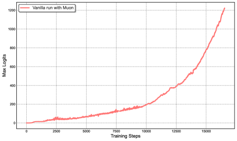
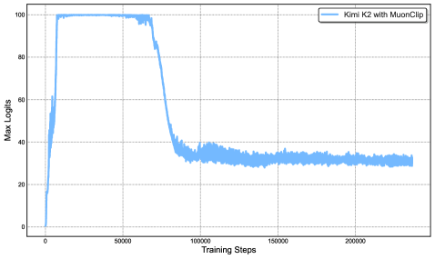
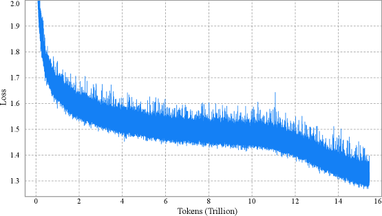
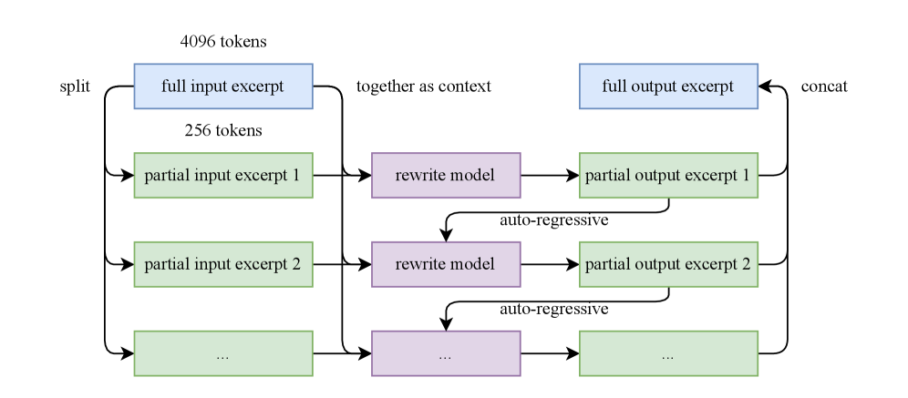
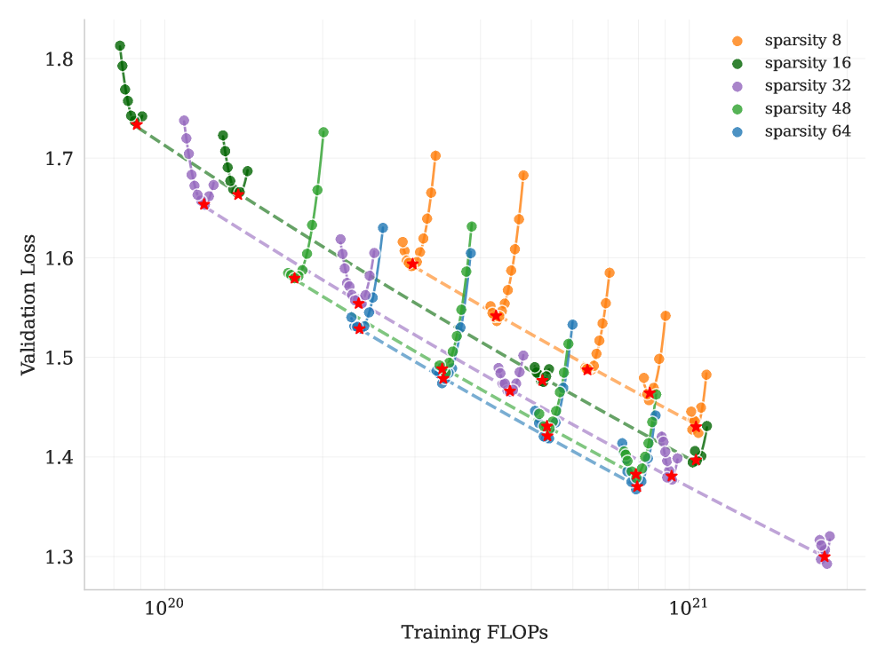
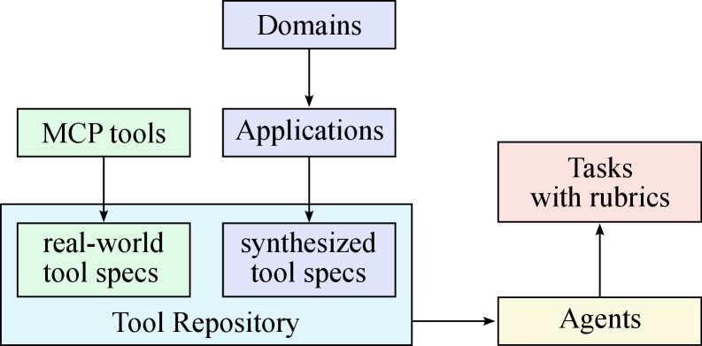
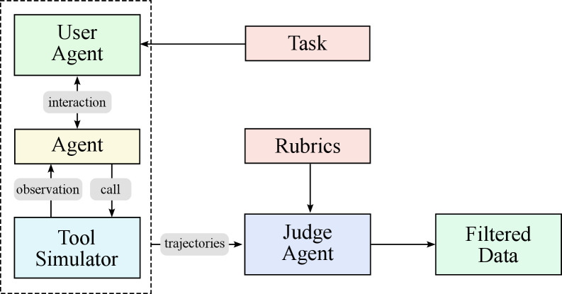
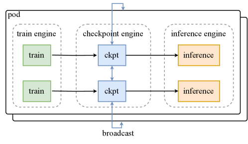
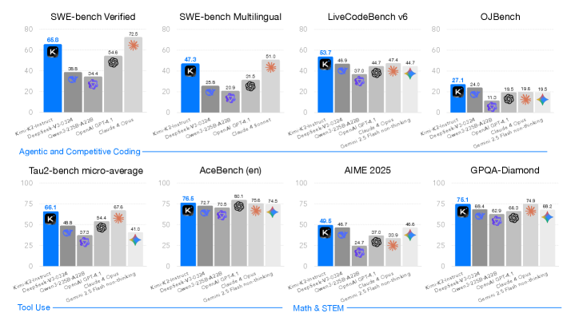

Kimi K2: Open Agentic Intelligence（Moonshot AI / 月之暗面）
一句话：要让大模型从「会答题」走向会自己用工具、规划、动手干活（agentic intelligence），瓶颈在两头——预训练受限于高质量数据有限，必须榨干每个 token 的价值；后训练则苦于真实的「工具使用轨迹」太稀缺。K2 用三件武器回应：稳定训练的 MuonClip 优化器、把工具调用数据大规模合成的流水线、以及让模型自己当裁判的强化学习框架。
本页基于 arXiv 原文（2507.20534v2）正文、图表与附录构建。术语首次出现时给出英文原词，便于对照原文。文中所有架构示意图与结果图均取自原论文。
论文开篇就把基调定在一个范式转变上：大模型正从静态的模仿学习（学人类写好的文本）转向 Agentic Intelligence（智能体智能）——模型能在复杂、动态的环境里自主感知、规划、推理、行动，通过与环境交互获得训练分布之外的新技能。要达到这个目标，预训练和后训练各有一道坎：
K2 的每一项设计都是针对一个具体的「已有方案不够好」。先建立画面感——下面四张卡片就是本文方法的「反面动机」，点开看它们各自卡在哪：
做法：逐参数自适应学习率的一阶优化器，工程成熟、训练稳定。
卡在哪：在相同算力与数据下，学到的东西不如 Muon 多。当高质量 token 成为稀缺资源时，token 效率不足就是硬伤。
与本文关系：K2 改用 Muon 来提升 token 效率——这又引出了下一个问题。
做法：对权重更新做正交化（近似），让更新矩阵的奇异值更均匀，token 效率更高。
卡在哪：放大规模时注意力 logit 会爆炸（attention logits explosion），引发 loss 尖峰甚至训练发散——这个现象在 Muon 上比 AdamW 频繁得多。
与本文关系：本文要的是 Muon 的效率 + 稳定性，于是发明 QK-Clip 来「驯服」它。
logit soft-cap：直接给注意力 logit 封顶，但 Q·K 点积在封顶前就可能已经涨得过大，治标不治本。
QK-Norm：对 Q、K 做归一化，但它不适用于 MLA（多头潜在注意力），因为 MLA 的 Key 矩阵在推理时并不完整物化。
与本文关系：两条路都被堵死，所以本文从「权重」下手，提出新的 QK-Clip。
做法：搭建真实工具/环境，让模型在其中交互，记录工具调用轨迹做训练数据。
卡在哪：真实环境受成本、复杂度、隐私、可达性限制，很难造出足够多样、足够多的高质量轨迹。
与本文关系：本文转向「大规模模拟合成 + 关键场景真实沙箱」的混合路线，兼顾覆盖面与真实性。
K2 的整套方法可以挂在一条主线上：token 效率（token efficiency）。预训练阶段想方设法让每个 token 学到更多、还要训得稳；后训练阶段则把这些「通用先验」转化成「真能动手」的智能体行为。下面两条产线各管一头：
下面我们按「MuonClip → 数据改写 → MoE 架构（预训练三件套）→ 智能体数据合成 → RL 框架（后训练两件套）」的顺序逐一展开，方法部分是全文重头戏。
这是预训练的第一件武器。逻辑链很清晰：Muon 效率高 → 但放大会 logit 爆炸 → 用 QK-Clip 从权重侧摁住 → 合成 MuonClip。
注意力分数（softmax 之前的输入）本质是 q·k 的点积。训练中如果 Q、K 投影权重的谱范数（最大奇异值）不断变大，这个点积就会无界增长，最终触发数值不稳定、loss 尖峰乃至发散。论文在附录给出了假设：Muon 的更新矩阵奇异值更均匀、有效秩更高（不像 Adam 那样被少数大奇异值主导），更容易让权重的奇异值叠加式增大；而注意力的双线性形式 QᵀK 又把谱范数平方放大，于是 Muon 更容易 logit 爆炸。
QK-Clip 的核心想法极简：每一步训练后，监控每个注意力头的最大 logit；只要它超过阈值 τ，就把这个头的 Q、K 投影权重按比例缩小，把 logit 拉回阈值以下。几个关键设计：
MuonClip 就是把「Muon + 权重衰减 + 一致的更新 RMS 缩放 + QK-Clip」打包进一个优化器。下面两张图是它有效性的最直接证据。


一句话总结：左图是病，右图是药；QK-Clip 在不牺牲 Muon 效率的前提下，把注意力动态稳稳控制住。

一句话总结：「零 loss 尖峰」不是口号，这条平滑曲线就是 MuonClip 让万亿训练可控的证据。
不损害质量：论文训了两个 0.5B 激活 / 3B 总参的小模型对照，一个用原始 Muon、一个用带激进低阈值的 MuonClip。结果 loss 曲线几乎重合，下游任务也无统计显著退化——说明即使「剪得很狠」也不伤收敛（见原论文 Figure 12）。
会自动失活（self-deactivation）：在 K2 训练中，QK-Clip 只是阶段性起作用——前 7 万步有一部分注意力头触发过 clip；7 万步之后所有头的最大 logit 都自然降到了阈值以下，QK-Clip 就不再生效了（这正对应图 2 右侧蓝线先触顶、后回落的形状）。它遵循「最小干预」原则：需要时才动手，稳定后自动退场。
这是预训练的第二件武器，目标还是 token 效率。难题是：高质量知识类文本，读一遍不够吸收，读很多遍又会过拟合。K2 的解法不是简单重复，而是用一个改写（rephrasing）流水线，把同一份内容用不同风格、不同视角重写多份，等于在不破坏事实的前提下「换着说法」多学几遍。知识领域的改写有三个关键组件：

一句话总结：这条流水线把「读很多遍同一份原文」换成「读这份原文的多个忠实改写版」，提高 token 价值又不至于过拟合。
数学领域则把高质量材料改写成「学习笔记」风格（参考 SwallowMath），并把其它语言的优质数学资料翻译成英文以增加多样性。改写到底有没有用？论文用 SimpleQA 做了一个干净的对照实验：
| 训练策略 | 改写次数 | 训练轮数（epoch） | SimpleQA 准确率 |
|---|---|---|---|
| 原始数据重复多遍 | 0（原始 wiki 文本） | 10 | 23.76 |
| 改写 1 次再重复 | 1 | 10 | 27.39 |
| 改写 10 次各训 1 遍 | 10 | 1 | 28.94 |
同样的内容预算，「多样化改写 + 单遍训练」明显优于「原文重复 10 遍」（28.94 vs 23.76）。论文也提醒：合成数据规模化仍是开放问题——要控制幻觉、毒性、跨域泛化与保真，每份语料最多改写 2 次。
第三件武器是模型结构本身。K2 整体沿用 DeepSeek-V3 风格——超稀疏 MoE + 多头潜在注意力（MLA），但在两个关键超参上做了和 scaling law 实验相符的取舍：专家更多（更稀疏）、注意力头更少。
「稀疏度」= 总专家数 / 激活专家数。论文做了一组控制实验：在固定激活参数（即固定 FLOPs）下，增加总专家数能持续降低训练与验证 loss。最终 K2 选了稀疏度 48——384 个专家里每次只激活 8 个（外加 1 个共享专家）。

一句话总结：这张图是「为什么 K2 用 384 个专家」的直接依据——稀疏是免费的午餐，只是要付工程的账。
DeepSeek-V3 把注意力头数设成约层数的两倍以提升带宽利用，但长上下文下这会大幅推高推理开销。论文实测：序列长 128k 时，把头数从 64 提到 128（专家数不变）会让推理 FLOPs 暴涨 83%，而验证 loss 只改善 0.5%–1.2%。对重度依赖长上下文的智能体应用，这笔账不划算，于是 K2 把注意力头砍到 64。
| 架构参数 | DeepSeek-V3 | Kimi K2 | 说明 |
|---|---|---|---|
| 总参数 | 671B | 1.04T | 更大 |
| 激活参数 | 37B | 32.6B | 反而更少 |
| 专家总数 | 256 | 384 | 更稀疏 |
| 每 token 激活专家 | 8 | 8 | 相同 |
| 共享专家 | 1 | 1 | 相同 |
| 注意力头数 | 128 | 64 | 砍半，省长上下文推理 |
| 层数 | 61 | 61 | 相同 |
| 稠密层数 | 3 | 1 | 更少 |
注意一个反直觉点：K2 总参数比 DeepSeek-V3 大 50% 以上，激活参数反而更少（32.6B vs 37B）——这正是「更稀疏」的体现：参数池更大，但每次只动用很小一部分。
进入后训练。要教会模型用工具，就得有海量「工具使用轨迹」做监督微调（SFT）。但真实环境难规模化（见第 02 节），所以 K2 搭了一条三阶段合成流水线，受 ACEBench 启发，能批量产出多样、可验证正确的工具使用样本。点「下一步」跟着流水线走一遍：
论文用两张图分别画出了前两步（造工具/agent/任务）和第三步（造轨迹/筛选）：

一句话总结：这是合成流水线的上游，先把「舞台（工具）、角色（agent）、剧本（带 rubric 的任务）」批量搭好。

一句话总结：左框「模拟真实工具使用」负责覆盖面，右侧「按 rubric 筛选」负责质量——量与质同时拿到。
后训练的第二件武器是强化学习。论文认为 RL 比 SFT 有更好的 token 效率与泛化，于是在 K1.5 基础上继续把 RL 在任务多样性与训练算力两个维度同时放大。框架是一个 Gym 式可扩展系统，核心分两块：能自动判对错的任务用「可验证奖励」，主观开放的任务用「自我批判」。
凡是能自动验证对错的任务，都被纳入一个统一的「健身房」里训练。覆盖五大类：
但创意写作、开放问答这类没有标准答案的任务怎么办？K2 的答案是让模型给自己打分：同一个 K2 既当「演员（actor）」生成回答，又当「评论家（critic）」对自己的多个输出做成对比较排名，产生偏好信号去更新策略。
把 RL 扩到这么多任务，关键挑战是「各域都要稳步提升」。论文在 K1.5 的策略优化（用 Muon 优化）之上加了三招：
RL 常让回答越写越长，但在非推理任务上「更长」不值它的推理成本。强制预算逼模型把算力花在刀刃上，显著提升 token 效率、鼓励简洁有效的解。
联合 RL 容易把预训练学到的宝贵数据「训没了」。PTX 辅助损失既保住高质量数据，又缓解只对少数 RL 任务过拟合，提升跨域泛化。
创意写作、复杂推理在训练早期需要高采样温度来发现多样策略、避免过早收敛；但后期/评估时高温会引入过多随机性、损害可靠性。温度按计划从探索过渡到利用。
1T 模型每轮 RL 都要把新参数从训练引擎搬到推理引擎。K2 用分布式 checkpoint engine 逐参数流水线广播，不到 30 秒就能完成一次全量参数更新，对一次 RL 迭代几乎可忽略；代码已开源（见图 10）。

一句话总结：这套「广播全量、各取所需」的设计牺牲一点带宽换来极简、解耦，把 1T 模型的参数同步压到 30 秒内。
除了主线，有几处贯穿全文的取舍与发现值得单独拎出来——它们往往比 benchmark 数字更能说明这份报告的「设计哲学」。
当高质量数据见顶，「每个 token 学到多少」成了 scaling 的真正瓶颈。Muon 提升单 token 学习量、改写 让同份内容产生更多有效学习信号、稀疏 MoE 在固定 FLOPs 下榨出更低 loss——本质都在抬高 token 的「单位价值」。
纯靠模型给自己打分很容易「奖励作弊」、自我陶醉。K2 的巧思是：把 RLVR 里学到的客观判断力，源源不断地蒸馏进 critic，让它在评判创意写作这类主观任务时也有「客观地基」。这是把对齐从可验证域扩到开放域的关键。
QK-Clip 逐头触发、不动前向计算；K2 训练里它只在前 7 万步对部分头起作用，之后全部头都自然降到阈值下、QK-Clip 彻底不生效。小规模消融也证明它对收敛与下游无显著损害——一个「该出手时才出手」的克制设计。
知识改写每份语料最多改 2 次，并强调跨域泛化、控幻觉、控毒性、保真与可规模化都还没完全解决。智能体数据也靠「模拟 + 真实沙箱」混合来补保真度。坦诚地标出边界，比只报喜更可信。
一句话：在 non-thinking（不开思维链扩展）设定下，Kimi-K2-Instruct 是开源 SOTA，尤其在编码与智能体工具使用上逼近甚至反超闭源 Claude 4；基座 Kimi-K2-Base 在多数开源基准上也领先。下面是最核心的几个数字（均为 non-thinking）：

一句话总结：这是 K2 的成绩单——一个开源、non-thinking 模型在 agentic / coding 任务上挤进了第一梯队。
| 基准（指标） | Kimi K2 | DeepSeek-V3 | Qwen3-235B | Claude Sonnet 4 | GPT-4.1 |
|---|---|---|---|---|---|
| SWE-bench Verified（单次） | 65.8 | 38.8 | 34.4 | 72.7* | 54.6 |
| SWE-bench Multilingual | 47.3 | 25.8 | 20.9 | 51.0 | 31.5 |
| LiveCodeBench v6 | 53.7 | 46.9 | 37.0 | 48.5 | 44.7 |
| OJBench | 27.1 | 24.0 | 11.3 | 15.3 | 19.5 |
| Tau2 telecom（Avg@4） | 65.8 | 32.5 | 22.1 | 45.2 | 38.6 |
| ACEBench (En) | 76.5 | 72.7 | 70.5 | 76.2 | 80.1 |
| AIME 2024（Avg@64） | 69.6 | 59.4 | 40.1 | 43.4 | 46.5 |
| GPQA-Diamond | 75.1 | 68.4 | 62.9 | 70.0 | 66.3 |
| MMLU-Redux（EM） | 92.7 | 89.5 | 89.2 | — | 92.4 |
| Multi-Challenge（多轮冲突指令） | 54.1 | 31.4 | 34.0 | — | 36.4 |
带 * 为 Claude 4 在 agentic 设定下的成绩。编码与工具使用上 K2 大幅领先开源、逼近闭源；数学/STEM 多项第一；ACEBench 略低于 GPT-4.1。数字以原论文表格为准。
基座方面：Kimi-K2-Base 在 12 个英文基准里 10 个达到开源 SOTA（MMLU 87.79、MMLU-Pro 69.17、SimpleQA 35.25），中文全面领先（C-Eval 92.50、CMMLU 90.90、CSimpleQA 77.57）。
论文坦诚列出了 K2 当前的短板（这些往往比成绩单更能帮你判断它适不适合你的场景）：